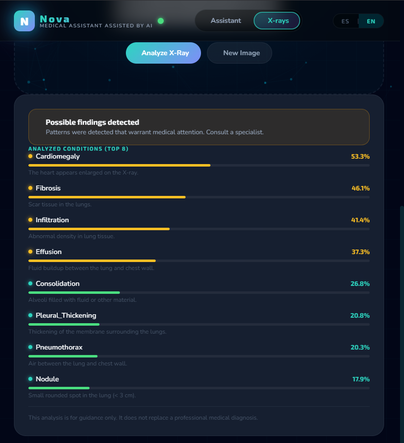
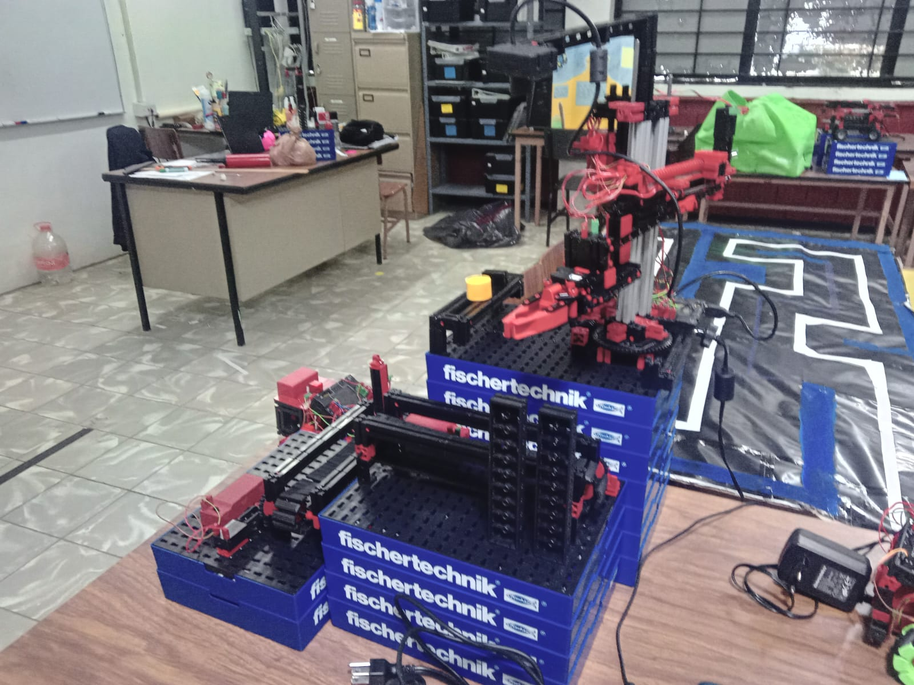
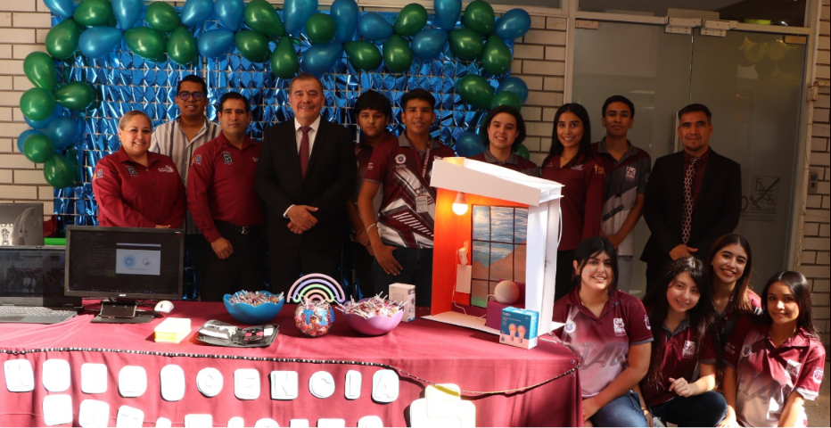
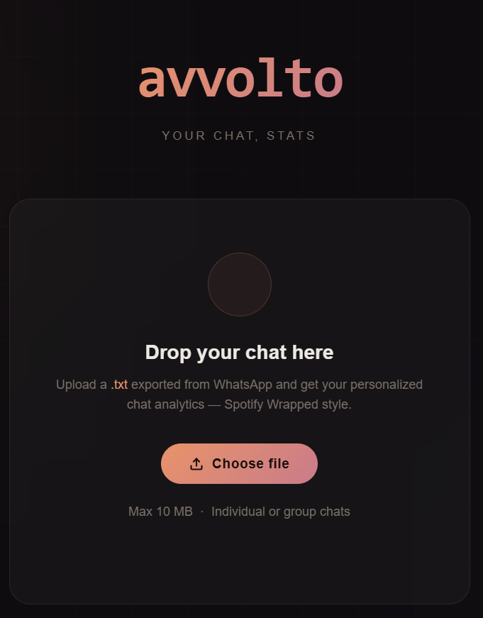
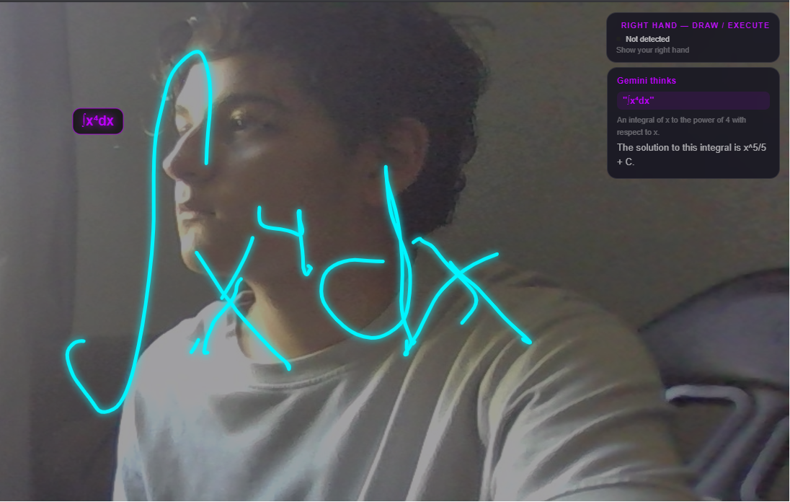
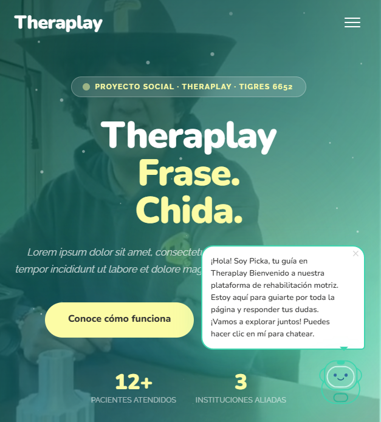
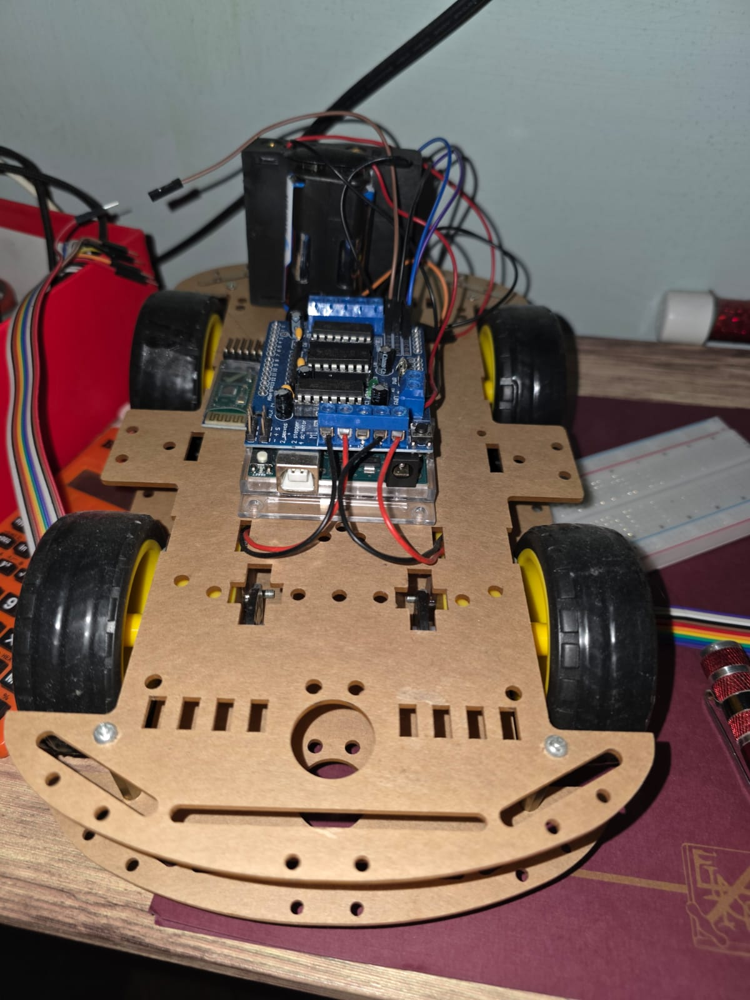
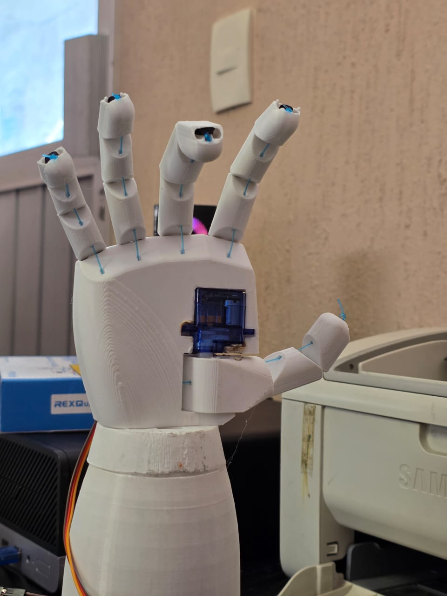
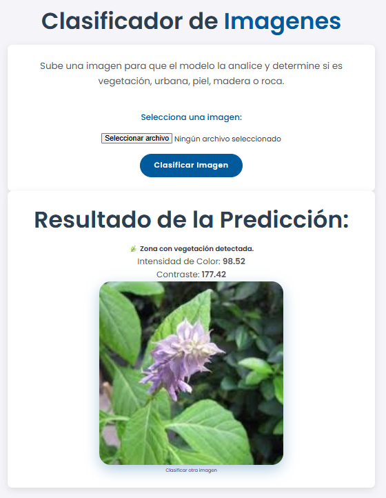
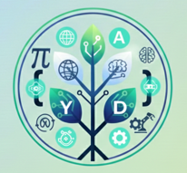

Un recorrido por los momentos que me han definido.
La robótica despertó mi interés por STEM. Empecé a construir y programar mis primeros robots con fischertechnik, entendiendo la conexión entre hardware y software.

Empecé a programar con Python por curiosidad. Creé scripts básicos, automatizaciones y mi primer chatbot. La programación se convirtió en mi herramienta favorita.
Entré a la Escuela Industrial y Preparatoria Técnica Álvaro Obregón en la carrera técnica de Inteligencia Artificial. Aprendí fundamentos de ML, estructuras de datos y desarrollo web.

Construí un robot controlado por gestos y una mano robótica imitadora. Combiné visión por computadora con Arduino y servomotores.
Desarrollé Nova, un asistente médico que analiza rayos X usando DenseNet y conversa con pacientes mediante Gemini API. Desplegado en producción.
Mi proyecto más ambicioso: un asistente con cuerpo 3D, reconocimiento facial, voz y ejecución de acciones. Backend en Rust y Python con Vertex AI.
Fundé Lumen, una red de apoyo para mi preparatoria que conecta estudiantes con recursos, mentoría y herramientas para su desarrollo académico y personal.
5to semestre de IA, 10+ proyectos, 2+ años programando. Siempre buscando el siguiente reto que me empuje a crecer.
Estos son los proyectos más relevantes que he creado.







